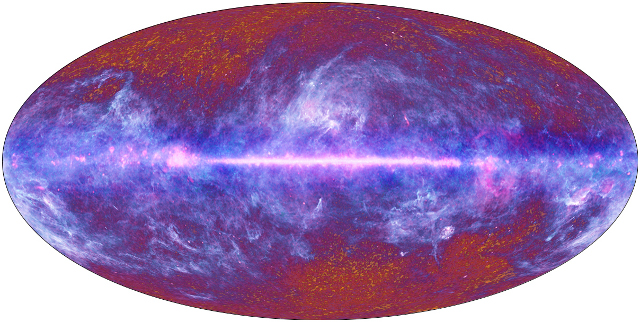
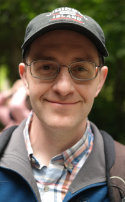

Starting August 1, 2024, the Huffenberger Cosmology Group has moved to Texas A&M University. Contact email: khuffenberger at tamu.edu
In the field of cosmology, we measure distant objects to examine the large scale universe. We learn about its structure, content, origin, and evolution.
In our group, our primary subject is the Cosmic Microwave Background. This is the afterglow of the Big Bang, seen today from deep space in the microwave-wavelength band of the electromagnetic radiation spectrum. We also work on topics like large-scale structure, the cosmic X-ray background, and gravitational weak lensing.
As researchers who specialize in data analysis, we support observational projects that provide a steady flow of data for us to interpret. We help to plan for the next generation of scientific instruments so that this flow continues.

Image of the sky in microwaves, as measured by the Planck satellite. We must look past the Milky Way in the foreground to measure the cosmic microwaves in the background.
Today, experimental designs are so ambitious that they require multinational collaborations to field the instruments and dedicated analysis teams to process the data. We now belong to three large, currently-active collaborations:
- The Atacama Cosmology Telescope (ACT) is currently taking data.
- The Simons Observatory is under construction and expected to take its first measurements in 2023
- The CMB-S4 project is in the planning and proposal phase and will take its first measurements around 2027.
In the past, we worked with the Planck satellite mission and the Q/U Imaging ExperimenT (QUIET). We have worked on a number of independent projects in smaller groups, some related to the CMB and some related to other aspects of cosmology or astrophysics.
Our work is funded by NASA and the National Science Foundation
Principal Investigator

Kevin Huffenberger
Professor
Astrophysics Group
Department of Physics, Florida State University
609 Keen Physics Building
Tallahassee, FL, 32306
khuffenberger at tamu.edu
Co-spokesperson, CMB-S4 collaboration, 2022-2024 term.
Curriculum Vita
Download FSU-format CV from Faculty Database
Publications
SAO/NASA Astrophysics Data System (ADS) publication search
ArXiv search
Google scholar page
ORCID iD page
Support
We are grateful to the federal agencies for their generous support.
"Confronting CMB Foreground Models with Planck data"
(NASA Astrophysics Data Analysis Program award, 2023-2025)
"Millimeter-wavelength transients and sources with the Atacama Cosmology Telescope and the Simons Observatory" (NSF Astronomy and Astrophysics Grant, 2022-2025)
"CMB Polarization Foreground Effects on B-modes and Lensing"
(NSF Astronomy and Astrophysics Grant, 2020-2023)
"Next Generation Data Analysis For Next Generation Cosmic Microwave Background Experiments"
(NSF Astronomy and Astrophysics Grant, 2018-2023)
"Modeling CMB polarization foregrounds and their isotropy violation"
(NASA Astrophysics Theory Program, 2017-2022).